# 特征选择
# 引言
特征选择：给定一个学习任务，对于给定的数据属性 （特征）集，从中选出与任务相关（对学习任务有利） 的特征子集的过程。
- 减少数据维度，缓解“维数灾难”，减少计算量
- 通过去除与任务不相关特征、冗余特征、或者关联性较小的特征，降低学习任务的难度
- 通过选择与任务相关的特征，提高分类器性能
- 处理高维数据的两大主流技术之一
特征选择方法分类：
- 过滤式特征选择：先对数据集进行特征选择，然 后再训练学习器，特征选择过程与后续学习器无 直接关联。
- 包裹式特征选择：以分类器性能作为特征选择的 准则，为给定分类器“量身定制”特征子集。
- 嵌入式特征选择：同时进行分类器学习和特征选 择，在训练分类器时自动的进行特征选择。
# 特征的评价准则
理想评价准则是在测试数据上的错误率，实际很难计算； 采用实验估计的方法，需要使用交叉验证，会导致很大的计算量。
评价准则反映了在一组特征下，第i和第j类的可分程度，评价准则一般需要满足以下4个要求：
- 评价准则应该与分类错误率有正相关，以反映特征的分类性能
- 对于独立特征，评价准则则应该具有可加性
- 对称性和非负性
- 单调性，加入新的特征不会减少可分程度
# 基于类内类间距离的可分性判别
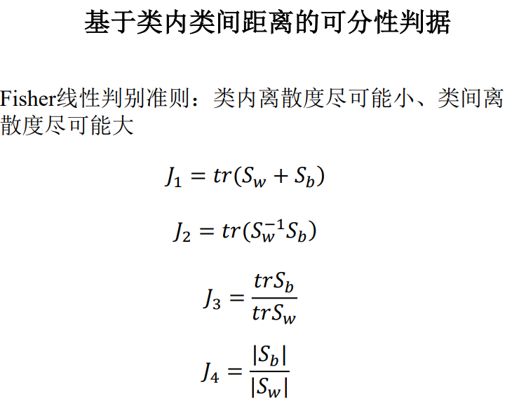# 基于熵的可分性判别
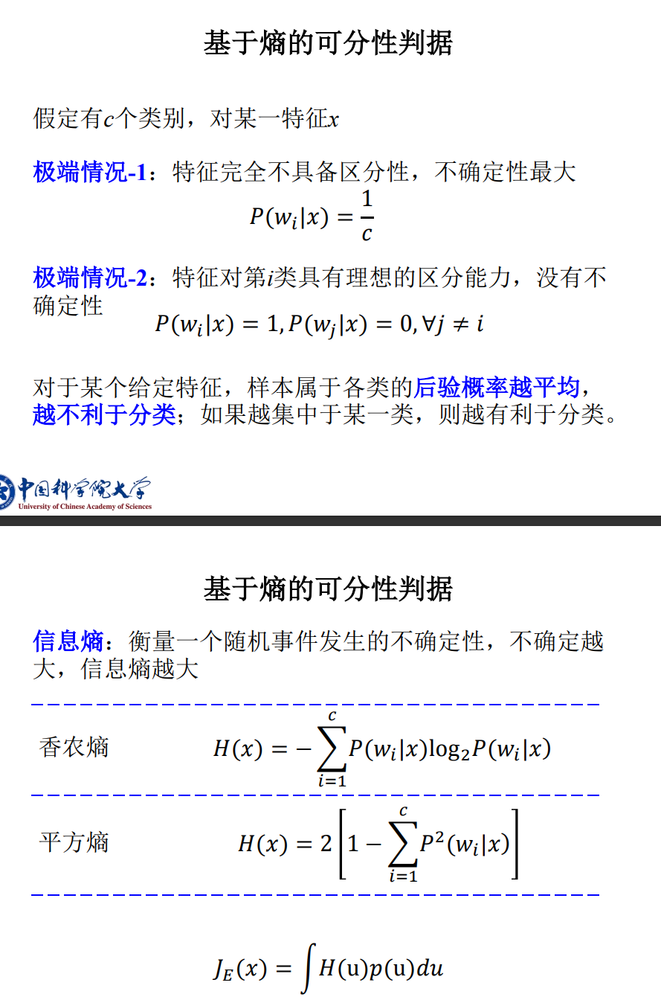# 特征选择的最优算法
基本思想：将所有可能的特征选择组合以树的形式进行表示，采用分枝定界方法对树进行搜索，使得搜索过程尽早达到最优解，而不必搜索整个树。
基本前提：特征的评价准则判据对特征具有单调性， 特征增多时，判据值不会减少
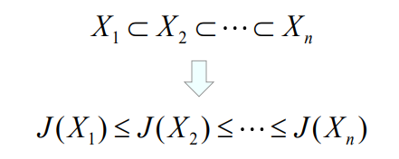树的表示：
- 根节点包含全部特征；
- 每一个节点，在父节点基础上去掉一个特征；
- d维特征选择k个特征，需要d-k层达到需要的特征数量，即树的深度为d-k
技术路线：
树的生成
树的生成过程，要求使得同一层左侧节点对应的特征集合判别值小于右侧节点；评价判别的单调性，要求使得下层节点对应的特征集合判别值小于上层节点。
- 根节点出发，计算第一层每个节点对应的特征集合判别值，从左到右，从小到大排序；
- 计算第一层最右侧的节点下一层各子节点对应的特征集合判别值，从左到右，从小到大排序；
- 以此类推，直到生成满足树深度为d-k为止；
- 记录最右侧对应的特征集合判别最大的叶子节点，记为B。
树的回溯
回溯算法根据这两个特性，在对树搜索的时候进行分枝限界（从右到左，从上到下）
- 从某个节点开始往上面对树进行回溯，直到遇见分枝节点，搜索分枝节点最右侧未处理的一个分枝；
- 对于该分枝下每一层节点，计算对应特征集合的判别值V；
- 若V<B，根据判别的单调性，该节点以下的判别值都小于V，无需往下搜索，往上回溯，转到第1步；否则继续往下搜索，转第2步；若遇见叶节点转第4步；
- 计算叶节点对应特征集合的判别值，如果，更新B和相应的特征选择集合。转第1步；否则，算法终止。
算法示例
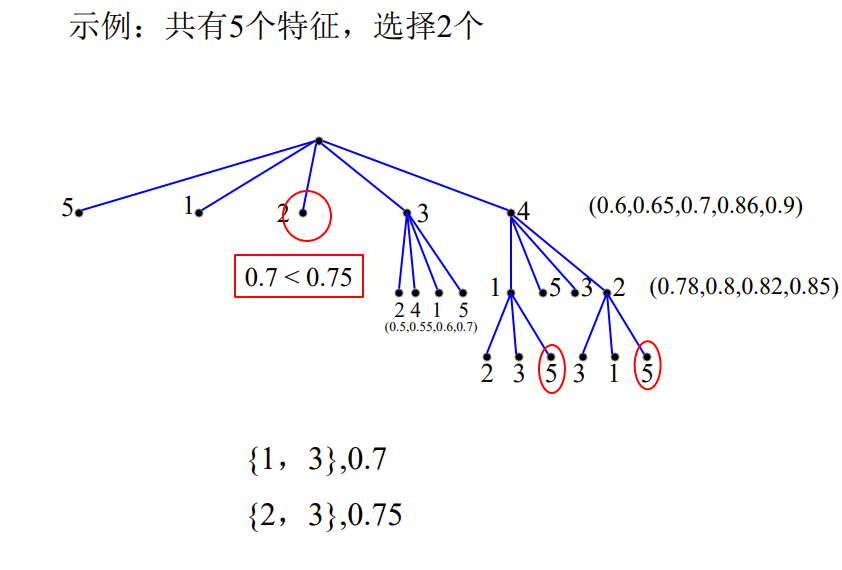树的生成：
- 根节点出发，计算去掉第1，第2，第3，第4，第5个特征的判别值分别为（0.6，0.65，0.7，0.86，0.9），再按从小到大，从左到右排序；
- 优先考虑判别值大的对应的特征集合，即最右侧节点，再计算下一层，去掉第4特征基础上，再计算去掉第1，第2，第3，第5特征的判别值分别为(0.78,0.8,0.82,0,85)；
- 以此类推，直到计算到叶子节点，假设我们计算到叶子节点，得到去掉第4，2，5特征后，剩余的第1和第3特征对应的判别值为0.7，记为B，生成过程结束
解释为什么要回溯：主要是因为生成过程中，没有考虑其他组成的情况，例如上一层节点下其他叶子节点，以及再上一层的其他节点下的各种情况，需要回溯，看其他情况下，是不是存在更优的解。
树的回溯：
- 从最右侧的叶子节点从上回溯，计算上一层中比B大的节点下的叶子节点，例如去掉第4，第3特征的下叶子节点，假设当计算到去掉第4，1，5特征后，剩余的第2，第3特征对应的判别值为0.75，其值大于B，则更新B的值为0.75，并更新特征选择集合为第2，第3特征。
- 再从该层往上回溯计算，去掉第3特征的判别值大于B，则继续计算去掉第3特征节点下各子节点的判别值，如果均小于B值，根据单调性准则，减少特征数量，不会增加判别值，那么继续计算下的值都不会超过B，就不再需要继续向下搜索。
- 同理，往上回溯计算，去掉第2特征的判别值小于B，根据单调性准则，减少特征，不会增加判别值，那么无需继续搜索。
回溯过程的单调性作用：回溯过程与B值比较时，需要结合单调性准则，即减少特征，不会增加判别值，若该节点值大于B值，才有继续搜索的意义，否则根据单调性，无需继续向下搜索。
# 特征选择的次优算法
最优算法依赖树的分枝限界搜索，依然比较耗时。
次优算法：贪心策略
# 单独特征选择法
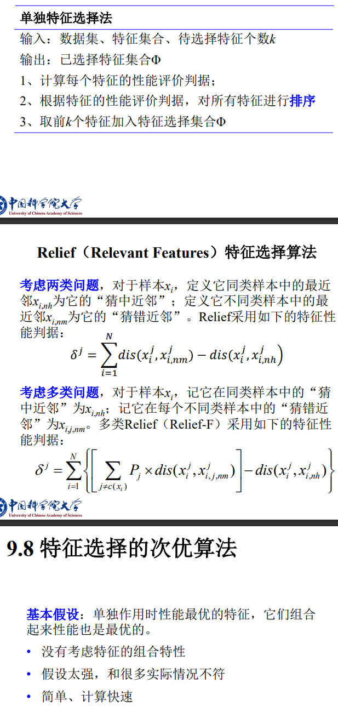# 顺序前进特征选择法
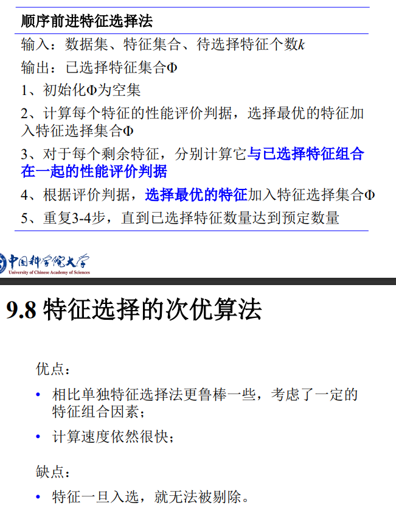# 顺序后退特征选择法
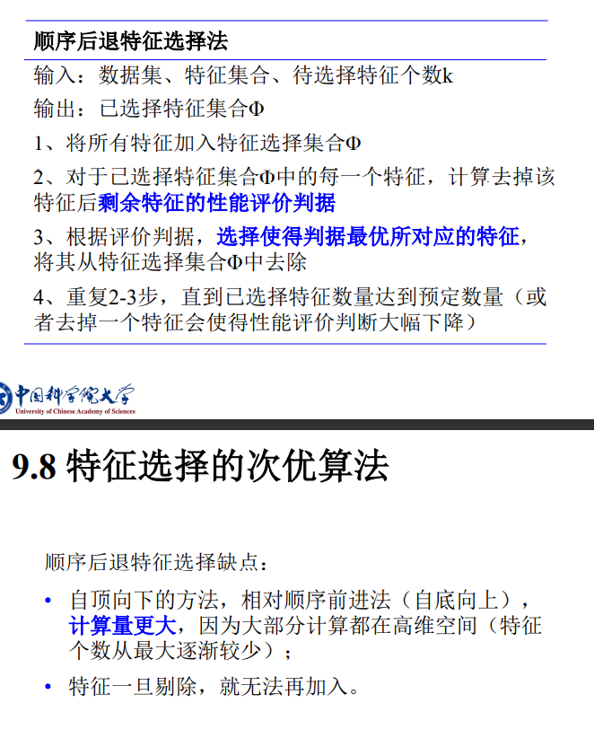# 增l减r特征选择法
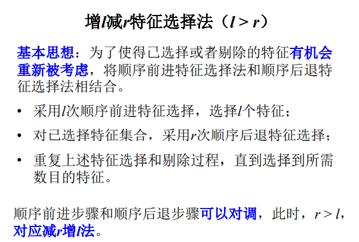# 包裹式特征选择法
包裹式特征选择方法对分类器的基本要求：
- 分类器能够处理高维特征向量
- 在特征维度很高、样本个数较少时，分类器依然可以取得较好的效果。
SVM符合上述两种基本要求
直观方法：给定特征子集，训练分类器模型，计算分类器错误率为特征性能判据，进行特征选择。
- 每次分类器训练和错误率计算需要的计算量大， 不适合大量尝试不同的特征组合。
替代方法：首先利用所有的特征进行分类器训练， 然后考查各个特征在分类器中的贡献，逐步剔除贡献小的特征。
- 递归支持向量机（R-SVM）
- 支持向量机递归特征剔除（SVM-RFE）
技术路线：
- 用当前所有特征训练线性支持向量机；
- 评估每个特征在支持向量机中的相对贡献，按照相对贡献大小进行排序；
- 根据事先确定的递归选择特征的数目，选择出排序靠前的特征，用这组特征构成新特征；
- 重复1-3步，直到达到规定的特征选择数目。
# 基于L1范数的特征选择
考虑线性分类方法：
- 等于0，第i个特征对分类没有影响
- 不等于0，第i个特征属于有用特征
基本思想：在学习w的时候，对w进行限制，使得w 不仅能满足训练样本的误差要求，同时使得w中非零元素尽可能少（只使用少数特征）
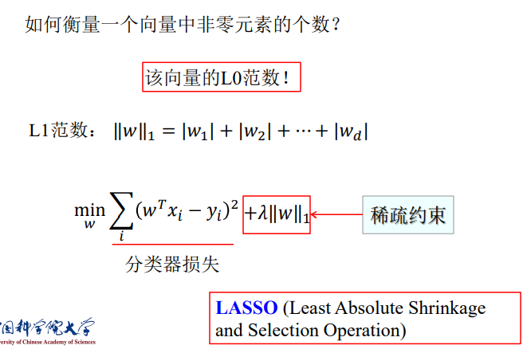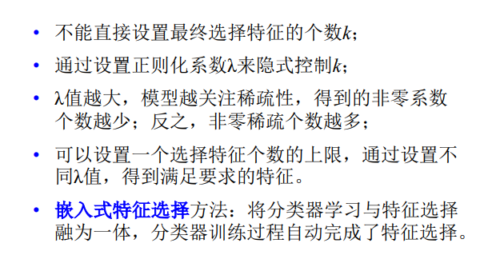选择第一范数的解释：
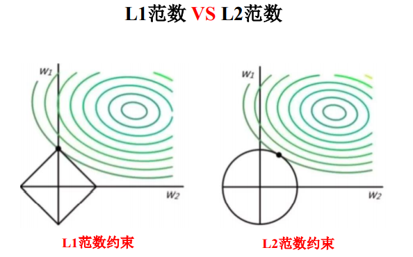L1范数是菱形（一次项），与权重等值区域相交时，等容易使得权重稀疏，即权重非零元素尽量少；
L2范数是圆形（二次项），与权重等值区域相交时，不太容易使得权重系数。
稀疏性（L1范数）应用：
稀疏字典学习
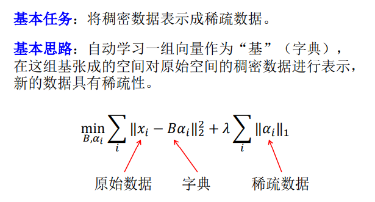鲁棒主成分分析
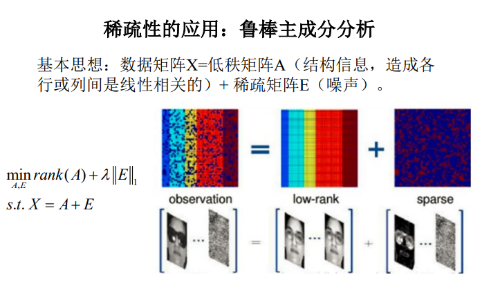